| Back | |||
The Building Blocks of Wholeness Christopher Alexander's Fifteen Properties This summary and restatement of the fifteen properties has been written for the application to neighborhoods. |
|||
|
The Fifteen Properties Are the Glue which Binds Wholeness Together
A wholeness, is an area of space or land, in which various centers have arisen. On an open green field site, there will be hillocks, edges, cliffs, dips, old trees, ... In an urban site there will be a view towards a beautiful building, a sidewalk wide enough to enjoy, a railing or a cafe which marks a spot so people gather around it. In either case, these centers which have arisen, form the wholeness of the place, and they are, to a greater or lesser degree, coupled with one another. As a result of this coupling, each center gains a little more life. A detailed example, from The Nature of Order, of how this coupling works.
In a neighborhood, these centers, and their couplings, will occur at different scales. A village green, a path, a bench, a town hall, a low wall around the green, trees around the green, lanes leading to the green, houses and gardens on these lanes, flower beds in the garden of a house, a lawn, with a distant view…. Since each of these centers brings more life to another, through this coupling, gradually, all the centers together become more vibrant, more self-sustaining, and more alive.
There are just fifteen kinds of glue, or connection, or coupling between centers. They are the ways in which one center can embellish another, or help to give it life.
These fifteen kinds of "glue" may be seen as relational structures that are possible, between centers, and which, in creating these connections, form deeper wholeness in that part of space. And the deeper the connections are, the more alive that wholeness is.
Everything, then, in the process of giving life to a neighborhood, may be seen through the introduction of one or another of these fifteen properties. When building on the wholeness that already exists, each of these 15 properties introduces more life to the neighborhood. Each property also brings with it additional centers that embellish those that exist. But this only works if they build on. and extend, the existing wholeness. This is the process through which life is brought into the environment.
| |||
|
1. Levels of Scale An example from |
| ||
| Do you see the range of sizes of the different entities in this place in India? The columns, the spaces between the columns, the distant view, the column capitals, the column bases, the smaller pieces etched into the columns bases, the flutes on the columns, the arches between the columns, the niches on the wall, the wall itself. Within the structure of any coherent wholeness, there is a balanced range of sizes of the entities which appear there -- and it is this balance of sizes that is pleasing and beautiful. As wholeness gets built up, each entity that appears is related to smaller entities, usually no more than about 3 times smaller, and equally, to larger entities, usually no more than about 3 times larger. The surprising thing about this property is the smallness of the scale steps between different sized neighboring entities -- more like 1:2 and 1:3, than 1:5 or 1:10. A multilayered, multiscaled structure of this kind should be present in every part of the neighborhood, distinct and visible as part of its essential structure.
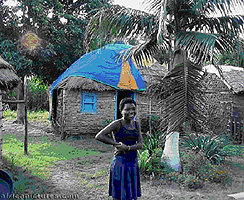 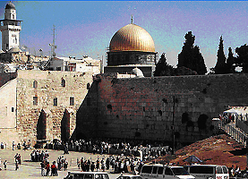 A Zulu farm in South Africa Jerusalem 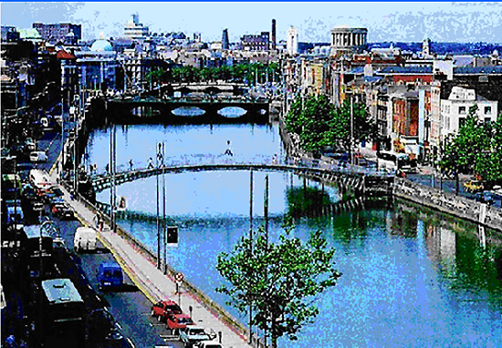 The river Liffey in the heart of Dublin So, what we have in almost any coherent structure, is a range of scales, entities of different sizes, with only small scale jumps between adjacent ones. In any coherent, well-adapted, complex system, any entity which is 10 cm across, is likely to be accompanied by entities that are 5 cm across, or 3 cm across, and is also likely to be accompanied by entities that are 15 or 20 cm across. The range of sizes that appears in any naturally occurring whole, is subtle; entities are of different sizes, but stepped down in very small jumps -- rarely in large jumps. Our common assumption about a universe made of large jumps in scale, is not borne out in complex systems. If we seek to make a coherent, living system in a neighborhood, we must create this subtly tuned range of sizes. We must pay attention to it, and we must make sure that the geometric structure of our creation, includes this geometric quality of many levels of scale among its elements, so that the elements are neither homogeneous in size, nor do they display exaggerated jumps in size with no in-between levels to span the gaps. Do you think that you now have this property clear,and that you understand. To shock you, in a friendly way, please look at this photograph of Inca stonework. Here you see levels of scale as it really needs to be. If you look at the largest stone, to the right of it you see another that is half the size; below you see one that is a quarter the size. Then below that, one that is an eighth the size; and tucked into a cranny above that one there is another one about 1/16th the size. Now try to imagine what it might be to create such a marvellous, tightly interlocking system of coherent spaces in a neighborhood -- according to this ladder of sizes. Can you do it? 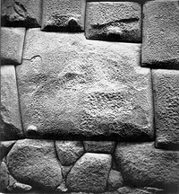 Inca stonework In a neighborhood, every step in the process of conceiving, laying out, building, or repairing the neighborhood, may introduce or strengthen new centers, by establishing the levels of scale relationship between them. |
|||
|
2. Strong Centers
| 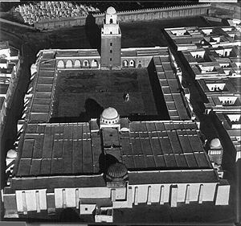 | ||
If you look at this mosque, the eye goes straight to certain obvious centers. The courtyard is one of them. The dome at the far end is another; and the dome at the near end as well. There are other domes which also form centers. The carefully shaped arches in the arcade on the far side of the courtyard, they are centers, too. In all these cases, the center is not merely a geometric point center. It is an arrangement, in its own right, which together with the space and configuration around it, creates a sensation of centeredness. It is not merely a sensation. It is an actual gathering together of the structure of space, which forms a pocket or field effect that we best describe by calling it "a center." Further, this sensation of centeredness occurs in greater or lesser degree in different centers -- some are stronger than others. And the strength or degree of centeredness of any one center comes about because space has been shaped in such a way as to make this centeredness visible, and strongly felt. If we seek to make a coherent, living system in a neighborhood, we must create this quality of centeredness in the various spaces, buildings, parts of buildings, and parts of space. Here is a local town square in the small town of Delft. 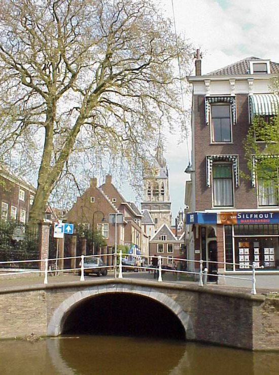 A Canal in Delft Here the entire structure, complex and higgledy-piggledy though it is, is dominated by structures which create centers locally. And they do so at an enormous variety of scales. The gable ends of the buildings are sharply marked as centers -- the steepness of the triangle sees to that. The bridge is very strongly marked, and its symmetry, quite naive and direct, forms a powerful local center. The dead-end street which forms a dead end street on the far side of the bridge railing, does the same thing, in space. Even the iron posts of the bridge railing form centers in their own right, individually; so do the cast iron knobs that hold the railing bars; so do the bays of horizontal railings taken as entitities. The windows, of course -- all the windows without exception are well proportioned and symmetrical. So are the bays formed by columns in the garden railing on the left-hand side. The tranquility of the place comes in large part from the very great number of locally symmetric centers that are used to build it up. This is a quality of the tradition of that place, but it is enormously powerful in its effect.
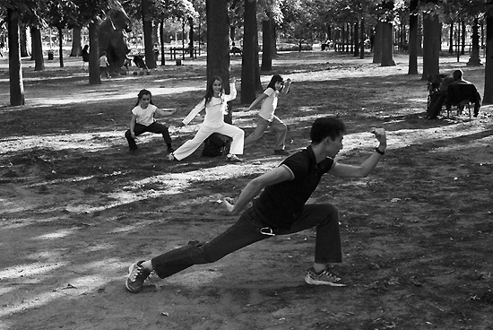 Here is the garden of the Tuileries in Paris In this case of the Tuileries, the beautiful spacing of the trees, essentially form an endless grid, but spaced in such a way that each avenue of trees, in each direction is felt as a center; and the square formed by each four trees, is also felt as a center. The size of the space is such that the canopy of the trees virtually creates a series of square rooms. As a result, this very simple structure, creating an enormous number of overlapping centers, provides people with the most relaxed place for enjoyment. You can see this relaxed feeling in the way people are behaving in this picture, some very active, some serious, some amusingly light hearted, some just wanting to be left quiet with their thoughts. In all three cases, the landscape of the neighborhood is dominated by a carefully made, and consciously made, system of centers.
Whenever we shape a neighborhood, then, both in the large and in the small, we must pay attention to this centeredness in every part of every neighborhood, and in every space, and we must make sure that the geometric structure we create, includes this geometric quality of centeredness in all its built elements and all its elements of space.
| |||
|
3. Thick Boundaries An example from | |||
This cup is remarkable, because its design is dominated by thick boundaries -- indeed it consists of little else. The gold around the rim is a boundary , itself composed of other boundaries. The middle band, containing the golden diamonds, is itself a boundary between the bottom design, and the rim of the cup. The lower band, once again a boundary, is made of figures which are once again themselves boundaries. Each figure in this boundary is surrounded by a dark boundary, and the figure itself is drawn by a triple-banded boundary of green and gold. The interlock of these many boundaries creates a profound, active, and engaged interplay within the surface of the cup. In a living system, A thick boundary is a kind of interchange zone. Where two zones, lying side by side, have their own integrity, it is not enough to have a sharp edge to separate them. In many cases, and especially in cases of living systems, there is a need for exchange, interchange, flows passing across the boundary, subtle kinds of filtering, places where interaction of the elements coming from either side can take place. In the photograph of Binsted Lane, below, we see a narrow road in a Sussex village, flanked on either side by boundaries consisting of a grass verge, then a ditch, and then a hedge.
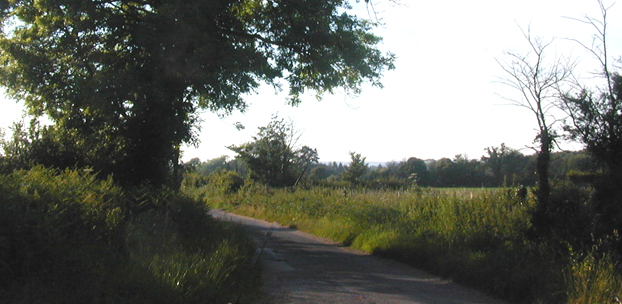 Binsted Lane, Sussex
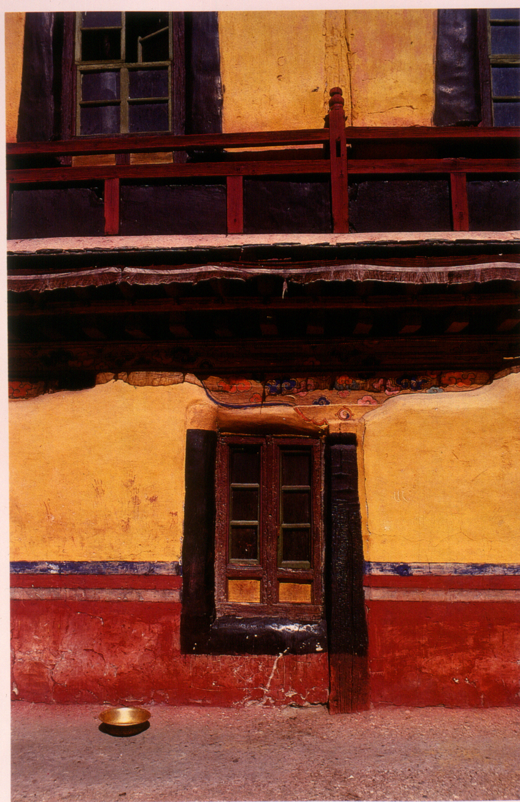 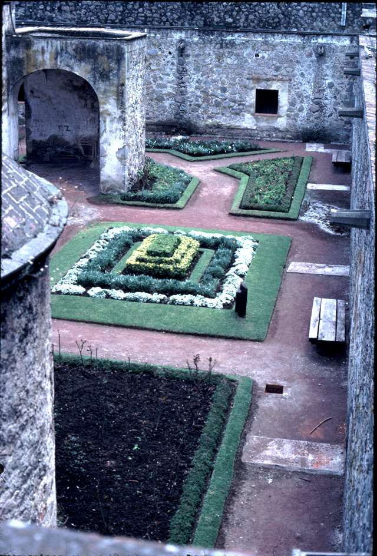 On the left thick boundaries are playing a major role on a Tibetan building On the right green boundaries of many shades form the basis for a monastery garden in Mexico. Lastly, here we see a wide arcade, filled with students of a university. The arcade forms a thick boundary connecting the building to the exterior -- it both separates the two, but also connects them by providing walking, standing and sitting space, for people who are on their way from one to the other, or for people involved in informal interactions that arise from the interplay of functions in their daily life.
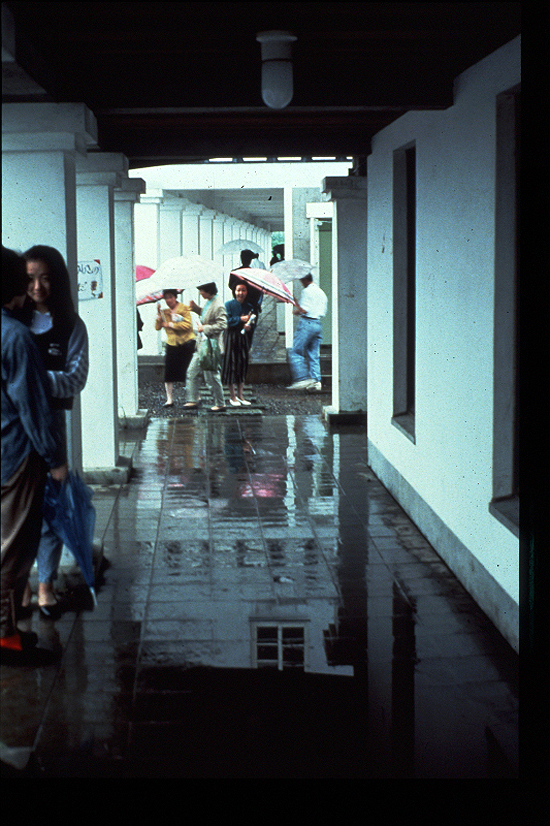 Wet hallway on the Eishin campus in Japan
| |||
|
4. Alternating Repetition An example from | 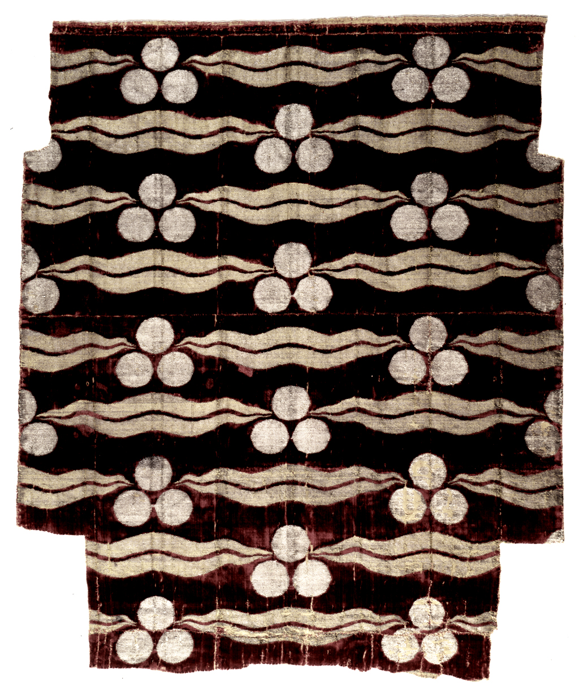 | ||
xxxxxxxx | |||
|
5. Positive Space An example from | 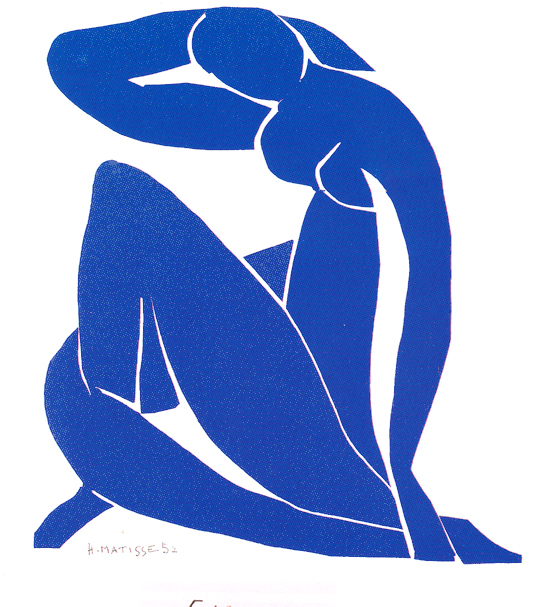 | ||
The principle of positive space, is perhaps the most profound embodiment of wholeness, and the most difficult principle to grasp. It says that a well formed entity, present in a wholeness, is always being created by the well-formed entities that are next to it. So, for instance, in this cut paper image made by Matisse, the whiteness of space, around the figure, presses in on the figure and gives it shape. The blue parts are themselves beautifully shaped. That comes to the eye right away. But the white parts, around the figure, are also beautifully shaped -- and it is these white parts, pressing inward to form the blue, which create the beauty of the figure. To express this metaphorically, we may say that under conditions of wholeness realized, each thing is directly formed by the action of its surroundings, on it, shaping it. This is not a meaningless tautology -- as in "of course this chair has the inverse shape of the air next to it," which tells us very little or nothing at all. Instead this principle asserts that the chair becomes beautiful, when the individual lumps of air next to the chair, and around it, are themselves beautiful lumps, and the chair has been fashioned in just such a way as to make this happen. |
|||
6. Good Shape An example from | 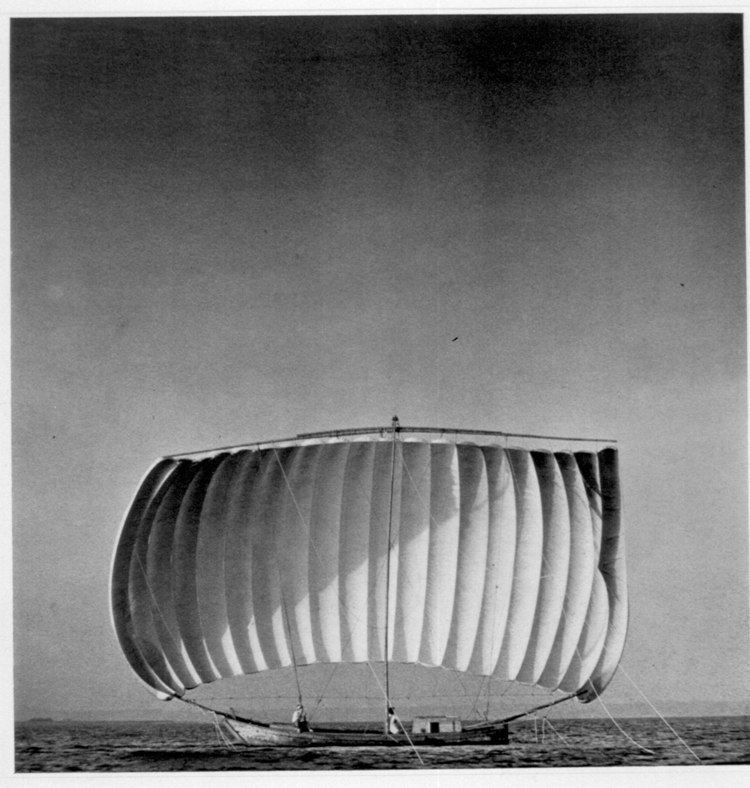 | ||
xxxxxxxx | |||
| |||
7. Local Symmetries
| 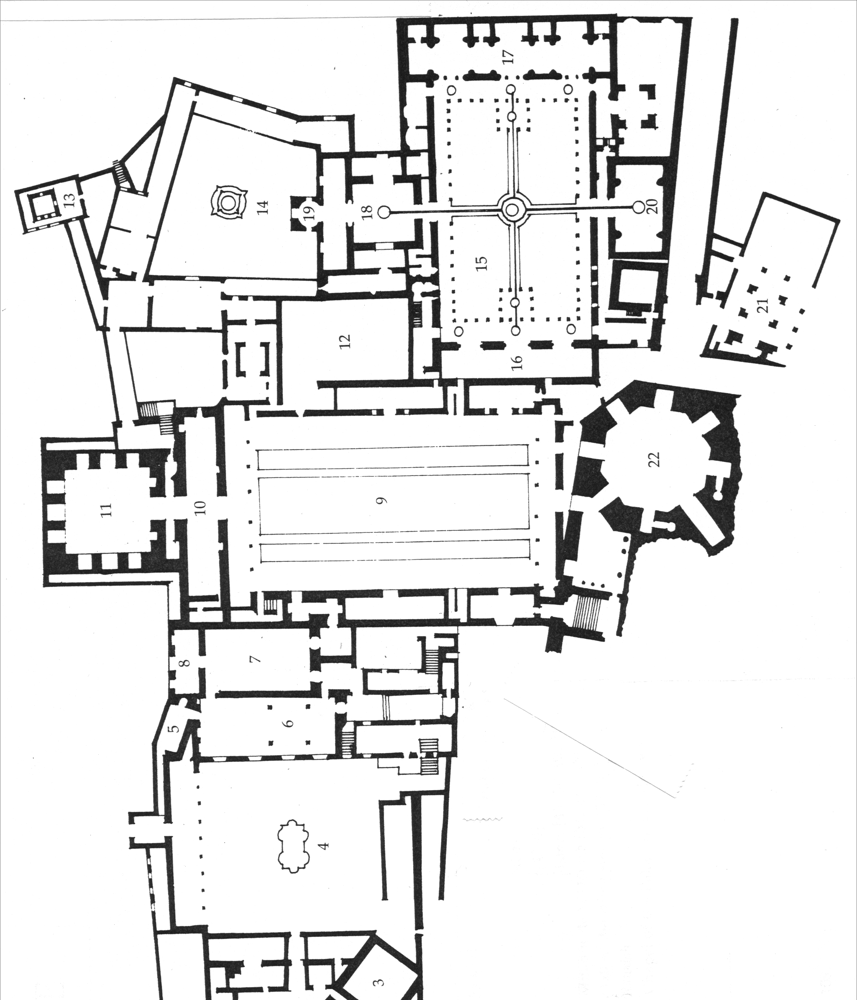 | ||
xxxxxxxx | |||
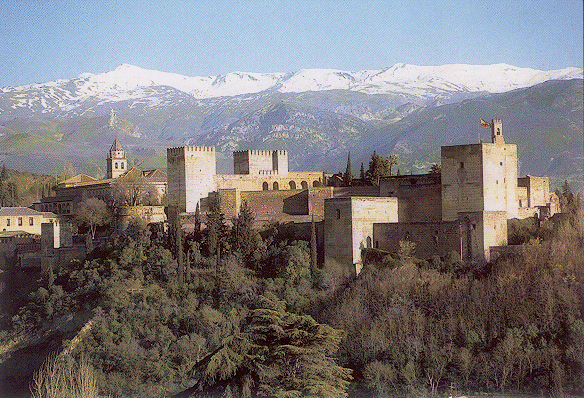 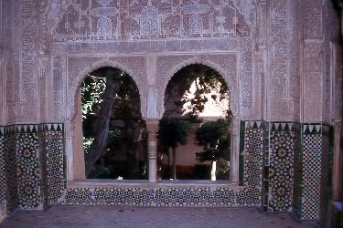
| |||
8. Deep Interlock and Ambiguity | 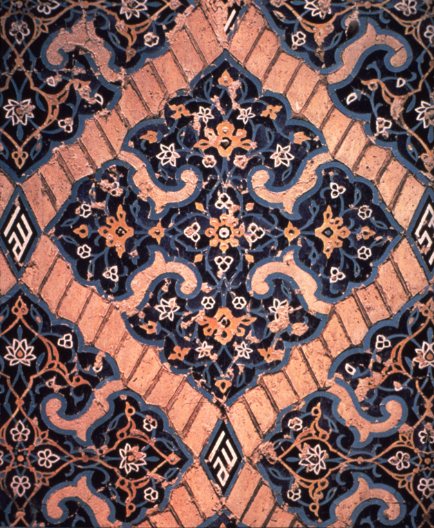 PERSIA Courtesy of www.natureoforder.com | ||
xxxxxxxx | |||
9. Contrast | 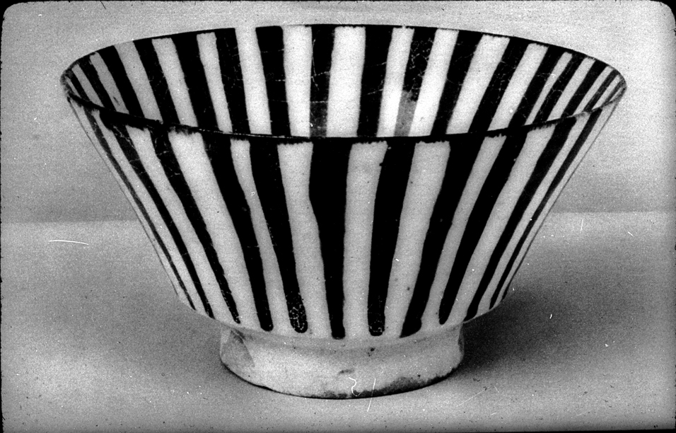 PERSIA Courtesy of www.natureoforder.com | ||
xxxxxxxx | |||
10. Gradients | CALIFORNIA Courtesy of www.natureoforder.com | ||
xxxxxxxx | |||
11. Roughness | 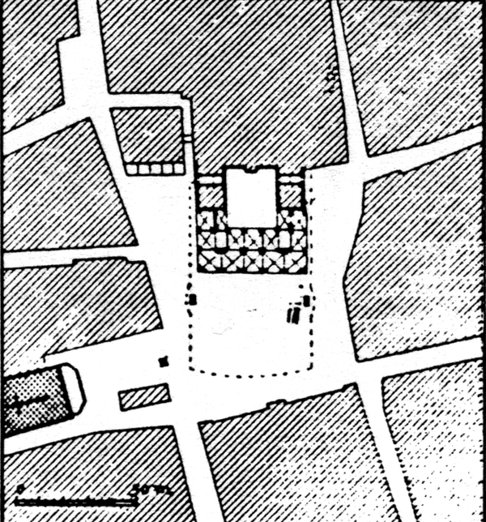 GERMANY Courtesy of www.natureoforder.com | ||
xxxxxxxx | |||
12. Echoes | ITALY Courtesy of www.natureoforder.com | ||
xxxxxxxx | |||
13. The Void | 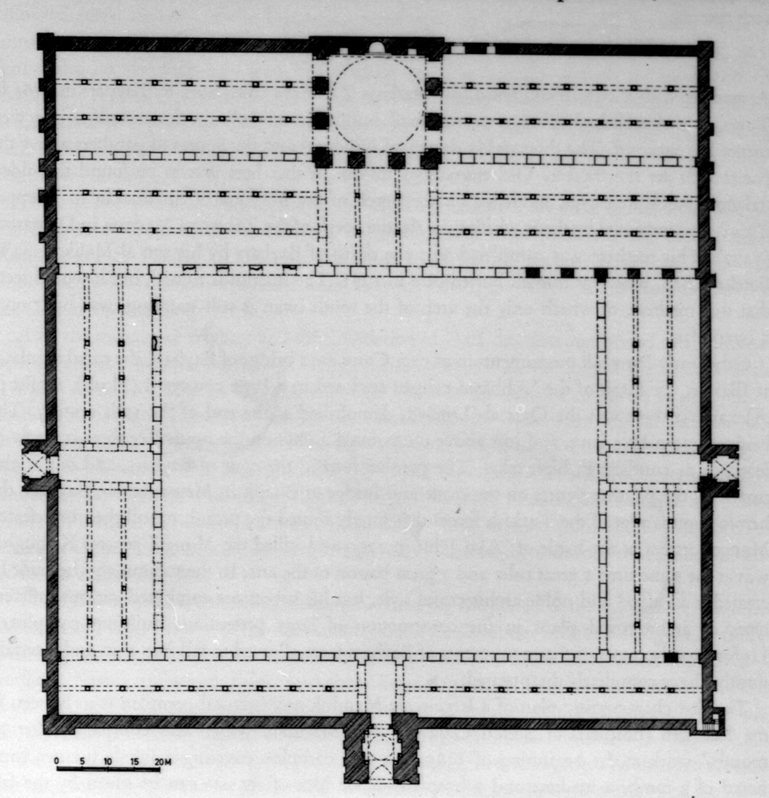 EGYPT Courtesy of www.natureoforder.com | ||
xxxxxxxx | |||
14. Simplicity and Inner Calm | 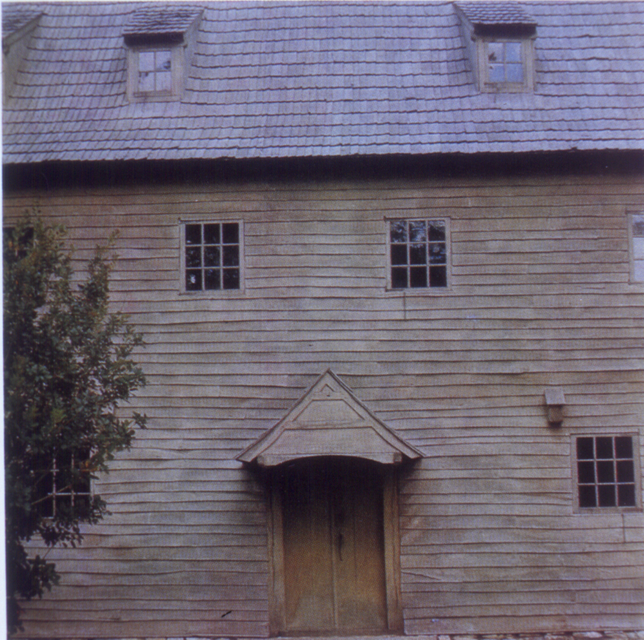 NOVA SCOTIA Courtesy of www.natureoforder.com | ||
xxxxxxxx | |||
15. Not Separateness | 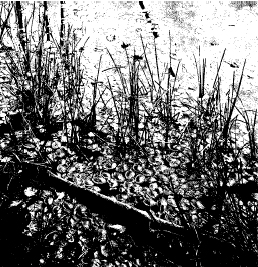 ENGLAND Courtesy of www.natureoforder.com | ||
xxxxxxxx
| |||